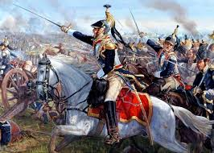
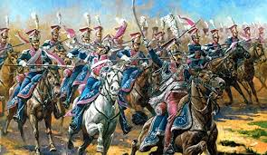

}
GUERRAS NAPOLEONICAS

Las guerras napoleónicas, también llamadas guerras de la Coalición,fueron una serie de conflictos bélicos que tuvieron lugar durante el tiempo en que el emperador Napoleón I Bonaparte gobernó en Francia. Fueron en parte una extensión de los conflictos que estallaron a causa de la Revolución francesa y continuaron, a instigación y gracias al financiamiento del Reino Unido de Gran Bretaña e Irlanda, durante todo el Primer Imperio francés. No existe consenso sobre el momento exacto en que comenzaron estas guerras. Hay quienes consideran que empezaron cuando Napoleón alcanzó el poder en Francia, en noviembre de 1799, sin embargo otras versiones sitúan el periodo bélico entre 1799 y 1802 en el contexto de las guerras revolucionarias francesas, y consideran la ruptura de la paz y declaración de guerra del Reino Unido a Francia en 1803, que siguió al breve periodo de paz del Tratado de Amiens en 1802 como el punto inicial de las llamadas guerras napoleónicas. Las guerras napoleónicas, que hoy en día se tiende cada vez más a llamar las «Guerras de Coalición» por haberle sido en realidad impuestas a Napoleón por los aliados, finalizaron el 20 de noviembre de 1815, tras la derrota final de Napoleón en la batalla de Waterloo y el Segundo Tratado de París de 1815. En conjunto, el casi continuado período de guerras comprendido entre el 20 de abril de 1792 y hasta el 20 de noviembre de 1815 es llamado con frecuencia La Gran Guerra Francesa (anterior a la Primera Guerra Mundial, llamada simplemente La Gran Guerra).
PRIMER Y SEGUNDA COALICION

La Primera Coalición (1792-1797) de Austria, Prusia, el Reino Unido de Gran Bretaña, España y el Piamonte (Italia) contra Francia fue el primer intento para acabar con el republicanismo. La coalición fue derrotada por los franceses debido a una movilización general, levas en masa, reformas en el ejército y una guerra absoluta. En 1795, Francia se anexionó los Países Bajos austriacos (actual Bélgica) y la Renania. Sigue la conquista de las Provincias Unidas de los Países Bajos (a las que había declarado la guerra en 1793) y su transformación en la República Bátava (Tratado de La Haya, 19 de enero de 1795). Prusia firmó la Paz de Basilea y dejó la coalición. España, tras unas victorias iniciales en la invasión del Rosellón en 1793 (guerra del Rosellón), vio como las tropas francesas invadían Cataluña, País Vasco y Navarra. Ante esta amenaza, también firmó separadamente en 1795 la Paz de Basilea.
La Segunda Coalición (1798-1801) de Imperio ruso, Reino Unido, Imperio austríaco, el Imperio otomano, Reino de Portugal, Reino de Nápoles y los Estados Papales contra Francia fue al principio más efectiva que la primera. El gobierno corrupto y dividido de Francia, bajo el Directorio, se encontraba en plena agitación, y la República estaba en bancarrota (ciertamente, cuando en 1799 Napoleón tomó el poder, encontró solo 60 000 francos en el Tesoro Nacional).
.VOLVER A LA PAGINA PRINCIPAL